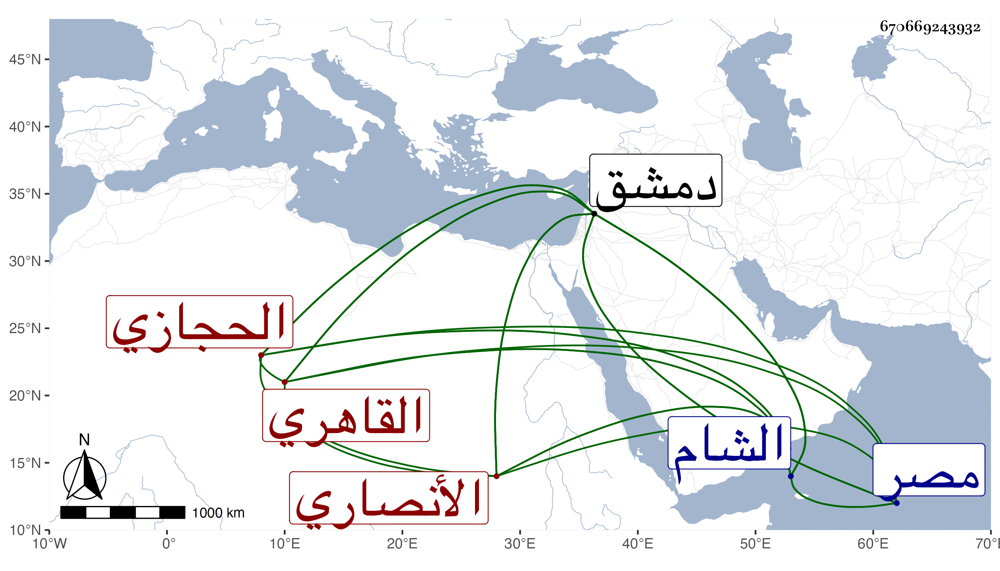

0902Sakhawi.DawLamic.ITO20230111-ara1.EIS1600.670669243932
Biography ID: 670669243932
783
عبد القادر بن محمد بن محمد بن محمد بن أحمد محيي الدين بن أبي الفتح ابن الشمس الأنصاري الحجازي الأصل القاهري نزيل درب القطبية ثم الشام والمكتب أبوه الآتي هو وأبوه ويعرف بابن الحجازي . ولد بعد صلاة الجمعة في العشر الأخير من ذي القعدة سنة تسع وثلاثين وثمانمائة فحفظ القرآن والعمدة والمنهاجين الفرعي والأصلي وألفية النحو وعرض على شيخنا وغيره وأخذ في النحو عن الأبدي وفي الفقه عن آخرين ، وتعاني الأدب ونظم ونثر وطارح وعمل مجموعا بديعا سماه المنتهى في الأدب المشتهي مع مشاركة في الفضائل والتخلق بالأخلاق الحسنة عشرة ولطفا وأدبا وتواضعا ممن كتب الخط الحسن وباشر التوقيع بل بلغني أنه أم بالمؤيد أحمد كأبيه لكن هذا في سلطنته وذاك في إمرته . وكذا استقر بعده في تكتيب البرقوقية ، وحج غير مرة وسافر الشام فقطنها ووقفت له على تقريظ لمجموع التقي البدري أجاد فيه وكان من نظمه فيه :
| لئن ذكروا من قد مضى بفضائل | فأنت تقي الدين آخر من بقي |
| وقيت ذوي الآداب جمعا عيوبهم | وما زلت أهل الفضل يا سيدي تقي |
وكتب عنه البدر من نظمه :
| حبي على مليء الحسن قلت له | إني فقير أرجي الوصل يا أملي |
| تالله ما نالني حجر ولا ألم | الا استغاث رجائي فيك يا لعلي |
مات بدمشق بخلوته من زاوية الشيخ خليل القلعي في ثاني عشر ربيع الأول سنة ثلاث وتسعين ولم يعلم بموته الا بعد يوم أو يومين ولم يحصل له من أهل دمشق أنصاف ولذا قال فيما كتب به من هناك لأخيه لأمه :
| دمشق غدا بها حالي عسيرا | وفيها ضاع مالي مع قماشي |
| واسهال ببطني مستمر | فحالي واقف والبطن ماش |
وقال أيضا :
| قالوا دمشق نزهة لأنها | أعينها تسقي بها الجنان |
| قلت نعم عيونها كثيرة | لكنها ليس بها إنسان |
وقال أيضا :
| قالوا دمشق لم يزل خريرها | يسمع من أنهارها الجراره |
| فقلت مصر بعد خلجانها | تحكي لكم أنهارها الخراره |
ومن نظمه :
| إذا قيل في الأسفار خمس فوائد | أقول وخمس لا تقاس بها بلوى |
| فتضييع أموال وحمل مشقة | وهم وأنكاد وفرقة من أهوى |
